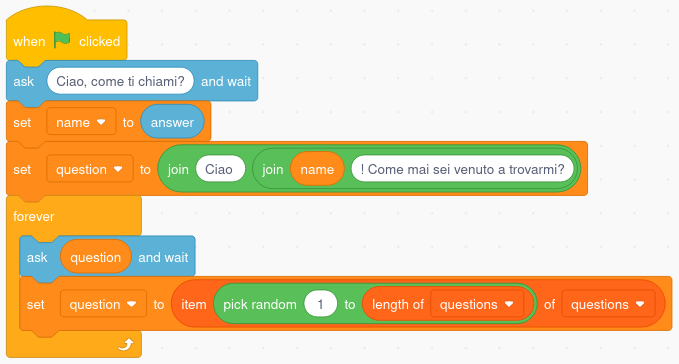
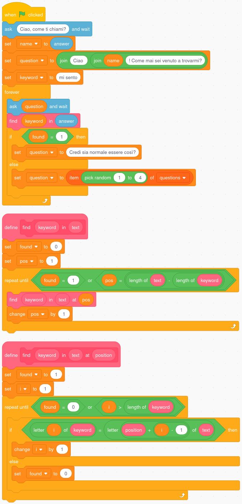
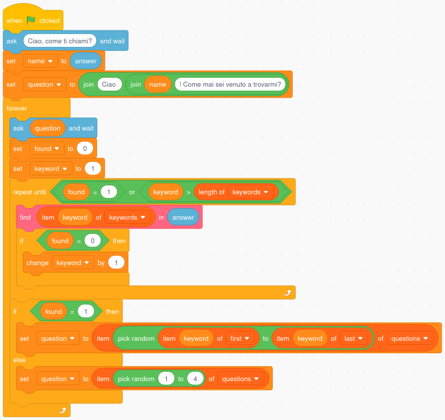
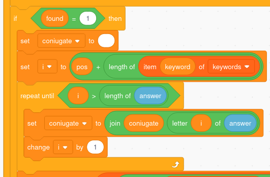
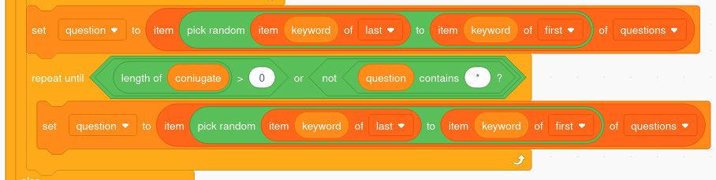
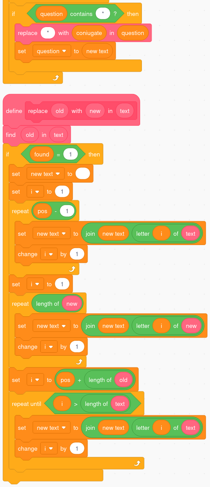
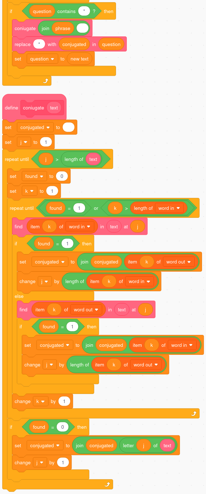

risorse | scratch lo psicologo
Il progetto è una versione semplificata di ELIZA, il celebre programma scritto da Joseph Weizenbaum a metà degli anni 60 per studiare l'uso del linguaggio naturale nella comunicazione uomo/macchina. ELIZA nasce come parodia di uno psicologo di scuola rogeriana che rifiuta di condurre un dialogo col paziente, preferendo invece rilanciare ad esso le sue stesse considerazioni. L'esperimento fu un successo: la maggior parte di coloro che ebbero accesso al sistema si convinsero di avere a che fare con un'entità intelligente. Weizenbaum, spaventato e preoccupato dall'inattesa reazione degli utenti, decise di descrivere nel dettaglio il funzionamento del suo programma nell'articolo A Computer Program For the Study of Natural Language Communication Between Man And Machine per dimostrare che si trattava di semplici (ma pur sempre brillanti) tecniche di manipolazione del testo.
In seguito alla pubblicazione dell'articolo diverse versioni del programma vennero sviluppate. Tra tutte la più famosa, quella che ha originato probabilmente il maggior numero di implementazioni, è quella in BASIC di Jeff Shrager; una suo adattamento comparve nel numero di luglio/agosto 1977 della rivista Creative Computing. Questo progetto nasce da una conversione in lingua italiana presente nel libro “Il BASIC per l'intelligenza artificiale” di Tim Hartnell edito da Edizioni Elettroniche Mondadori nel 1985 sotto il nome di Pafo.
Il programma accetta solo frasi scritte in minuscolo, iniziale compresa.
Non usare l'apostrofo per gli accenti: adoperare direttamente le lettere accentate.
Il programma ricerca nella frase immessa dall'utente una o più parole chiave a partire dalle quali costruisce una domanda o una considerazione correlata. Il fatto che la risposta del computer contenga dei rimandi ad uno o più concetti espressi nella frase originaria dovrebbe indurre l'utente a pensare che il programma dimostra un certo livello di comprensione del linguaggio.
Poiché non è ragionevole pensare di poter coprire tutti i possibili argomenti di conversazione è necessario prevedere l'emissione di risposte generiche se non è stata identificata nessuna parola chiave; alcuni esempi:
Tutte le risposte sono precaricate nella lista questions. Per evitare spiacevoli ripetizioni ELIZA utilizza di volta in volta una risposta diversa, ricominciando dall'inizio quando le ha esaurite tutte. Per semplicità questa versione ne sceglie una a caso, anche a rischio di ripetersi:
La versione minimale dello psicologo, scaricabile qui.
Ogni parola chiave ha associate una o più possibili risposte; ad esempio al frammento mi sento Scratch potrebbe replicare con Credi sia normale essere così?. La ricerca della chiave avviene scandendo il testo immesso lettera per lettera, controllando di volta in volta se la porzione di testo a partire dal carattere in esame corrisponde a quello della chiave:
Ricerca della chiave nel testo immesso dall'utente. Il progetto è scaricabile qui.
Introduciamo l'elenco keywords che contiene tutte le chiavi riconosciute dal programma. Per il momento lo inizializziamo con l'unica chiave che il programma conosce, mi sento. Approfittiamo per inserire anche la replica Credi sia normale essere così? in questions. Come fa il programma, una volta individuata la chiave mi sento a determinare la risposta corretta? Servono altre due liste, first e last che contengono rispettivamente l'indice della prima e dell'ultima delle possibili risposte associate alla chiave:
| # | question |
|---|---|
| 1 | Continua... |
| 2 | Va avanti |
| 3 | Sii più chiaro |
| 4 | Prosegui |
| 5 | Credi sia normale essere così? |
| # | keywords | first | last |
|---|---|---|---|
| 1 | mi sento | 5 | 5 |
Durante la scansione del testo immesso dall'utente il programma controlla una dopo l'altra tutte le chiavi contenute in keywords, fermandosi alla prima che trova. La risposta viene scelta a caso tra quelle il cui indice è compreso il valore in first e quello in last. Allo stato attuale, per esempio, la risposta alla chiave mi sento sarà scelta tra quelle il cui indice è compreso tra 5 e 5, quindi necessariamente Credi sia normale essere così?.
Segue la nuova versione del programma, in cui la variabile keyword non contiene più la chiave bensì il suo indice all'interno dell'elenco keywords:
Scansione dell'elenco delle chiavi. Il progetto è scaricabile qui.
Esattamente come fatto per le risposte generiche, anche per le chiavi conviene predisporre più risposte in modo da rendere il colloquio meno prevedibile. Considerando la possibile reazione del paziente alla domanda Credi sia normale essere così? cominciamo ad estendere il copione aggiungendo nuove chiavi e le relative risposte:
| # | keywords | first | last |
|---|---|---|---|
| 1 | mi sento | 5 | 5 |
| 2 | sì | 6 | 8 |
| 3 | no | 8 | 10 |
| # | question |
|---|---|
| 1 | Continua... |
| 2 | Va avanti |
| 3 | Sii più chiaro |
| 4 | Prosegui |
| 5 | Credi sia normale essere così? |
| 6 | Vedo... |
| 7 | Capisco... |
| 8 | Sei sicuro? |
| 9 | Come mai? |
| 10 | Perché no? |
Notare che le due nuove chiavi sì e no condividono la risposta in posizione 8, Sei sicuro?. È semplicissimo inoltre aggiungere sinonimi, per esempio potremmo decidere di trattare la chiave certamente alla stessa stregua di sì: basta aggiungere la nuova chiave in elenco e copiare i valori per first e last:
| # | keywords | first | last |
|---|---|---|---|
| 1 | mi sento | 5 | 5 |
| 2 | sì | 6 | 8 |
| 3 | no | 8 | 10 |
| 4 | certamente | 6 | 8 |
Ci si può ora divertire a estendere il vocabolario aggiungendo ad esempio degli avverbi generici cui rispondere altrettanto genericamente: forse, probabilmente → Non sembri molto sicuro. In una seduta psicologica è frequente l'analisi dei sogni, questo dovrebbe suggerire altre chiavi: sogno, sogni → Sogni spesso?, Cosa ti suggeriscono sogni di questo tipo?, Ti hanno mai turbato i tuoi sogni?, …
Una versione del programma che include queste e altre chiavi è scaricabile qui.
In alcune situazioni è possibile estrarre parte del testo immesso dall'utente e inserirlo nella replica per rendere il colloquio più verosimile:
A tal scopo aggiungiamo la chiave credo cui associamo tre repliche, due parametriche ed una generica. È importante predisporre sempre una risposta generica, nel caso in cui non si riesca ad individuare il frammento di testo da riutilizzare:
| # | keywords | first | last |
|---|---|---|---|
| 1 | mi sento | 5 | 5 |
| 2 | sì | 6 | 8 |
| 3 | no | 8 | 10 |
| 4 | certamente | 6 | 8 |
| … | |||
| 14 | credo | 17 | 19 |
| # | question |
|---|---|
| 1 | Continua... |
| 2 | Va avanti |
| 3 | Sii più chiaro |
| 4 | Prosegui |
| 5 | Credi sia normale essere così? |
| 6 | Vedo... |
| 7 | Capisco... |
| 8 | Sei sicuro? |
| 9 | Come mai? |
| 10 | Perché no? |
| … | |
| 17 | Da quanto tempo credi *? |
| 18 | Perché credi *? |
| 19 | Cosa ti ha portato a credere tutto ciò? |
L'asterisco che caratterizza le risposte parametriche indica il punto in cui va inserito il frammento estratto dal testo immesso dall'utente.
Nel caso venga trovata una parola chiave, il programma copia nella variabile phrase tutto il testo che la segue. Ricordando che pos è la posizione della chiave all'interno del testo e keyword è l'indice della chiave nell'elenco keywords il codice dovrebbe essere di facile interpretazione:
La copia carattere per carattere del testo che segue la chiave.
La selezione della risposta ora si fa più complicata perché una risposta parametrica è ammissibile solo se siamo in possesso di un frammento da inserire al suo interno, in caso contrario dobbiamo accontentarci di una generica:
Selezione della replica più adatta.
Non resta che sostituire l'asterisco della risposta parametrica con il contenuto della variabile phrase. A tale scopo è stato definito un blocco apposito, replace (old) with (new) in (text) che salva nella variabile new text il risultato della sostituzione della sotto-stringa “old” con la sequenza “new” nel testo “text”:
La copia carattere per carattere del testo che segue la chiave.
La versione del progamma che usa le repliche parametriche è scaricabile qui.
Se da un lato l'uso del testo immesso dall'utente contribuisce a rendere il dialogo più convincente, dall'altro introduce una debolezza: il frammento, prima di essere riutilizzato, potrebbe necessitare di un intervento:
La risposta corretta che ci si attende dal computer è:
Prima di copiare il frammento di testo ricavato dalla frase dell'utente nella risposta parametrica è necessario trasformarlo applicando alcune sostituzioni, per esempio:
| word in | word out |
|---|---|
| ␣sono␣ | ␣sei␣ |
| ␣io␣ | ␣tu␣ |
| ␣mi␣ | ␣ti␣ |
| ␣me␣ | ␣te␣ |
| ␣ho␣ | ␣hai␣ |
| ␣mio␣ | ␣tuo␣ |
| ␣mia␣ | ␣tua␣ |
| ␣miei␣ | ␣tuoi␣ |
| ␣mie␣ | ␣tue␣ |
| … | |
I termini candidati per la sostituzione sono preceduti e seguiti da uno spazio per assicurarsi di rimpiazzare solo parole intere e non modificare parzialmente parole che al loro interno contengono uno o più di questi termini.
La sostituzione avviene scandendo il frammento estratto carattere per carattere e sostituendo ogni termine che si incontra con il suo omologo, quindi sia sono con sei che sei con sono:
La trasformazione del testo mediante sostituzioni successive.
La versione del progamma con l'adattamento del testo estratto è scaricabile qui.
Il programma completo dello psicologo con il vocabolario arricchito è scaricabile qui.
[Aggiornamento 23/05/2021]
Pochi giorni dopo la pubblicazione di questi appunti Jeff Shrager ha annunciato sul suo sito di aver rinvenuto negli archivi del MIT i sorgenti della versione originale di ELIZA:
In hopes of discovering the original source code for ELIZA, I recently went [remote] spelunking in Weizenbaum's archives, held by MIT. I was aided by MIT archivist Myles Crowley. This exploration succeeded spectacularly! We found a set of files labeled "Computer Conversations," and the first file folder we opened included a complete source code listing of ELIZA in MAD-SLIP, with the DOCTOR script attached!
Il codice originale è scaricabile direttamente dal sito di Shrager.
Pagina modificata il 20/05/2021